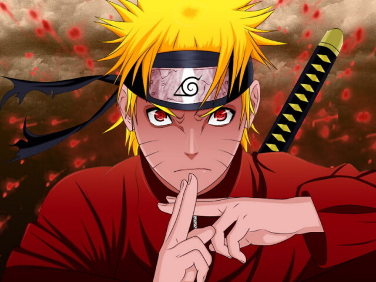
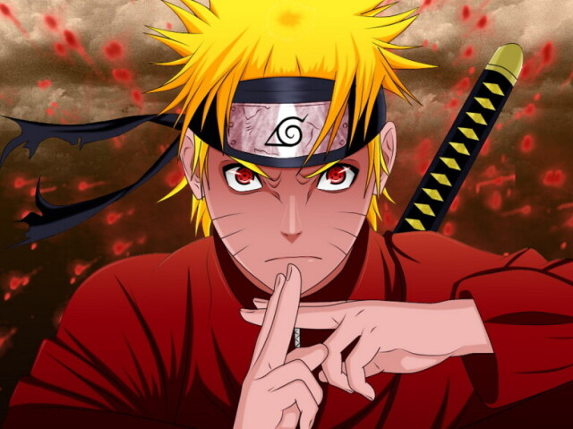

Naruto Uzumaki
Naruto Uzumaki é o protagonista de "Naruto", uma série de anime e mangá criada por Masashi Kishimoto.
Ele é um jovem ninja da Vila Oculta da Folha (Konoha) que sonha em se tornar Hokage, o líder mais poderoso e respeitado de sua vila.
Embora tenha crescido órfão e isolado devido à Raposa de Nove Caudas selada dentro dele, Naruto nunca desiste de seus sonhos e permanece alegre e determinado.
Conhecido por sua personalidade enérgica e obstinada, Naruto tem um forte senso de justiça e um desejo inabalável de proteger seus amigos.
Sua jornada o leva a desenvolver habilidades poderosas, como o Rasengan e o Sennin Mode, e ele eventualmente aprende a controlar o poder da Raposa de Nove Caudas.
Mais do que sua força, sua empatia e capacidade de perdoar são suas maiores qualidades, mostrando que a verdadeira força vem do entendimento e da compaixão.
Naruto cresce de um garoto travesso e incompreendido para um herói respeitado, demonstrando que a força de vontade e o desejo de criar laços com os outros são essenciais para alcançar a paz e a aceitação.
 
